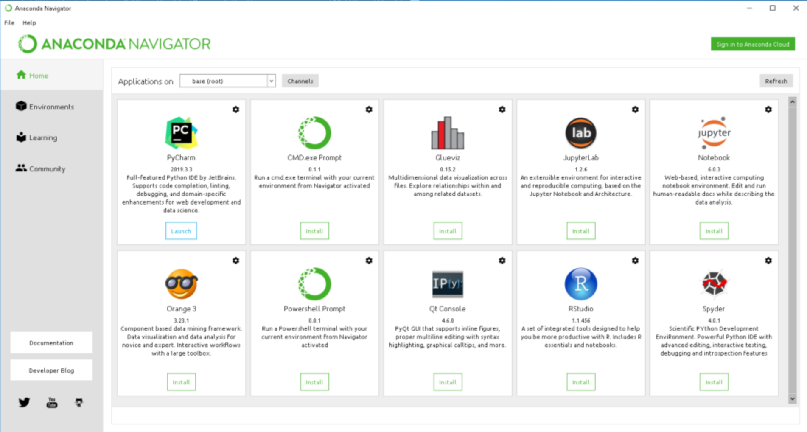

Guide to Installing Python
Installing Python
To install Anaconda Python follow the instruction at Anaconda Distribution Website. Based on the operating system select the proper version of the Anaconda package and install it in your PC.
After you successfully install the proper version, you will get anaconda application in you PC which will look like the figure below:

Best way to start with is the "Jupyter notebook". Lunch the jupyter notebook to start with Python.
Note- Linux:
- For Linux user, it could be little bit tricky. SOme time it becomes hard to locate anaconda path to the environment so you need to point the python you want to use. Please, run the command below to point the python:
bash
export PATH=/home/ubuntu/anaconda3/bin:$PATH
- There is 'base' or 'anaconda3' environment by defult. You can find the list of available environmet by typing following command on the terminal
bash
conda env list
- To start the 'base' environment type
bash
source activate base
- To install new package for example 'jupyter notebook' type
bash
pip install jupyter notebook
- After sucessfully installing Jupyter notebook, tye following to start it
bash
Jupyter notebook
Note - Cloud
- For running Jupyter notebook in AWS cloud, it is important to open the "8888" to "8889" with TCP rule with IP "0.0.0.0" and allow to be opend from anywhere. Once port is open, type following to
bash
jupyter notebook --ip=0.0.0.0 --no-browser